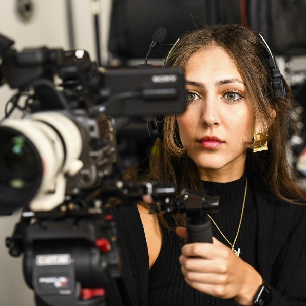

Co-Founder / Producer
Rosa Riad
Welcome to my world of cinematic passion and expertise! I'm Rosa Riad, a proud graduate from York University's esteemed Film Production program. With a rich background in the world of filmmaking, I've donned multiple hats throughout my journey.
My journey began with an invaluable experience at Canada Film Equipment, where I not only served as the head of customer service but also as a versatile camera technician and a proficient grip and electric technician. These roles allowed me to delve deep into the intricacies of equipment, ensuring seamless operations on set and a keen eye for detail in every shot.
However, my heart has always been drawn to the creative realm of producing and screenwriting. Over the years, I've honed my skills in these areas, crafting captivating narratives and orchestrating the various elements that breathe life into a film. My time on set has been a journey through various departments, but my focal point has always been the camera department. The art of capturing moments in time, translating emotions through lenses, and creating visual narratives fuels my passion.
Film, for me, is a symphony of creativity and technical precision, and I'm dedicated to weaving both elements seamlessly into every project I touch. From crafting compelling screenplays that resonate with audiences to meticulously curating the visual tapestry of each scene, I approach every endeavor with a blend of expertise and fervor.
Join me as we venture into the realm of storytelling, where every frame holds a world of wonder and every script has the power to touch hearts.
Thank you for being a part of this cinematic odyssey.
Warmly,
Rosa Riad